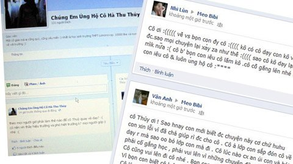

Cô giáo nhập viện vì bài giảng “canh gà Thọ Xương”

Lần cập nhật cuối lúc Thứ sáu, 12 Tháng 10 2012 15:11 Viết bởi Administrator Thứ sáu, 12 Tháng 10 2012 15:04
Từ một sự cố trong giảng dạy, cô giáo Hà Thị Thu Thủy - GV văn Trường THPT Lômônôxôp (Từ Liêm, Hà Nội) - đã viết đơn xin nghỉ việc sau áp lực dư luận nặng nề khi vụ việc được báo chí đăng tải.

Ngày 12-9, cô Hà Thị Thu Thủy dạy tiết cuối cùng trong chuyên đề ôn tập ca dao cho học sinh vào giờ ngoại khóa và chấm vở học sinh (gồm tám bài tập). Ngày 4-10, phụ huynh lớp 7A10 liên lạc với ban giám hiệu nhà trường thắc mắc khi phát hiện trong bài tập môn văn của con có sự nhầm lẫn khi cho rằng "canh gà Thọ Xương" trong bài ca dao Gió đưa cành trúc la đà là món "canh gà" của Hà Nội nhưng cô Thủy vẫn cho điểm 8 mà không sửa lỗi sai trên.
Ngay sau đó, vụ việc xuất hiện trên một số trang báo mạng cùng với nghi vấn về việc cô giáo có "vấn đề về kiến thức". Ngày 8-10, cô Thủy viết đơn xin nghỉ dạy.
Lỗi nhận thức hay lỗi nghiệp vụ?
Theo hồ sơ của cô Hà Thị Thu Thủy do thầy Nguyễn Quang Tùng, phó hiệu trưởng Trường THPT Lômônôxôp, cung cấp cho Tuổi Trẻ, cô Thủy vốn là học sinh chuyên văn tại Trường THPT chuyên Hùng Vương (Phú Thọ), tốt nghiệp khoa văn Trường ĐH Sư phạm Hà Nội loại giỏi và vừa hoàn thành luận văn thạc sĩ với điểm số 10/10. Luận văn này đã được cô Thủy triển khai thành sáng kiến kinh nghiệm ứng dụng trong trường, đạt loại A cấp huyện.
Ông Tùng cho biết ngoài việc xác minh hồ sơ, tổ trưởng chuyên môn và ban giám hiệu nhà trường đã tổ chức thi tuyển qua hai vòng và có ba tháng để cô thử việc trước khi đảm nhiệm đứng lớp chính thức.
Trong giải trình, cô Thủy cho biết: "Sau khi dạy ba tiết ôn luyện lý thuyết, kiến thức chung về bốn chùm ca dao đã học (trong chương trình chính thức) và trực tiếp hướng dẫn học sinh làm sáu bài tập trong phiếu, tiết thứ 4 tôi tập trung giúp học sinh nâng cao kiến thức trong tạo lập văn bản cảm nhận ca dao. Tôi đưa ra một bài tập yêu cầu cả lớp viết đoạn văn (10-12 câu) cảm nhận bài ca dao Trong đầm gì đẹp bằng sen (bài tập thứ 7 trong phiếu bài tập kể trên) sau khi gợi ý cho các em làm bài và bài cảm nhận về bài ca dao Gió đưa cành trúc la đà... (bài tập thứ 8). Sau đó tôi thu vở của học sinh để chấm, nhưng không phải chấm riêng bài số 8 mà chấm toàn bộ tám bài tập đã cho học sinh làm trong cả chuỗi ôn tập. Bài số 8, có một số học sinh hiểu sai "canh gà Thọ Xương" là món canh của Hà Nội, tôi đã trừ điểm, sửa lỗi chính tả, chữ viết nhưng không gạch vào lỗi sai... Tôi đã trực tiếp nhắc các em trên lớp về sửa lại lỗi sai này".
Nhưng cô Thủy đã không lường được việc học sinh lớp 7 vẫn là đối tượng cần "cầm tay chỉ việc" cần được cô giáo giải thích rõ ràng và trực tiếp sửa tỉ mỉ vào vở bài tập. Bởi vậy mới dẫn đến việc một số phụ huynh tá hỏa khi xem bài của con và thấy con hồn nhiên hiểu về món "canh gà Thọ Xương".
Thầy Nguyễn Quang Tùng cho biết: "Để khách quan, chúng tôi đã gửi phiếu thăm dò tới 28 học sinh lớp 7A10, kết quả cho thấy có những em cho biết đã được cô giải thích và yêu cầu sửa, có em nói không biết. Kiểm tra 28 cuốn vở của học sinh thì có 10 em hiểu sai câu ca dao trên, nhưng bảy bài tập còn lại của các em này làm tốt nên cô vẫn cho điểm 7-8. Ban giám hiệu nhà trường đã họp với nhóm giáo viên văn lớp 7 và toàn tổ văn, kiểm tra lịch báo giảng, giáo án của cô Thủy...
Kết luận của ban giám hiệu và tổ chuyên môn là cô Thủy không mắc lỗi nhận thức như dư luận cố ý hiểu sai lệch nhưng có lỗi nghiệp vụ do cô còn trẻ, thiếu kinh nghiệm trong việc dạy lứa tuổi học sinh THCS. Thứ nhất, cô đã sai khi yêu cầu học sinh cảm nhận tự do (một hướng dạy học mở) nhưng không chốt lại, giải thích một cách rõ ràng. Thứ hai, cô không sửa bài kỹ. Vì đối với học sinh lớp 7, việc sửa chữa của cô càng tỉ mỉ càng cần thiết".
Tuy nhiên, ông Tùng cũng giải thích: "Cô Thủy không có điều kiện kiểm tra việc học sinh đã "tự sửa" hay chưa vì ngay sau buổi học đó, nhà trường luân chuyển giáo viên vì lý do khách quan khác. Cô Thủy được phân dạy lớp khác". Điều này dẫn đến cái sai thứ ba là "cô Thủy không bàn giao việc kiểm tra vở học sinh cho giáo viên thay thế".
Áp lực nặng nề
Khi nhà trường còn đang trong quá trình xác minh, tìm hiểu sự việc thì từ một số phụ huynh, cơn giận dữ của dư luận đã được thổi bùng lên trên các trang mạng. Phê phán, chế giễu, bày tỏ thất vọng, thậm chí có ý kiến nghi ngờ uy tín của những ngôi trường đã đào tạo nên cô giáo.
"Lúc đó tôi quá sốc, nghĩ mình không thể đứng lớp trong tâm lý này và quyết định viết đơn xin nghỉ dạy tại Trường THPT Lômônôxôp từ ngày 8-10" - cô Thủy nói với Tuổi Trẻ về quyết định của mình. Ngay khi lá đơn xin nghỉ dạy được nộp lên ban giám hiệu, cô Thủy đã lặng lẽ về quê và tắt máy điện thoại.
Thầy Nguyễn Quang Tùng cho biết: "Chúng tôi đã nhận đơn của cô Thủy nhưng chưa có ý kiến chính thức gì về việc này. Về góc độ chuyên môn, cô giáo sai tới đâu, chúng tôi kiểm điểm tới đó. Cô có lỗi nghiệp vụ thì ban giám hiệu cũng có sai sót. Và chắc chắn đây sẽ là bài học mà chúng tôi phải rút kinh nghiệm sâu sắc. Nhưng tôi mong sao búa rìu dư luận không khiến sự việc tiếp tục bị hiểu sai lệch. Mong người lớn không lấy trẻ con làm "chứng cứ" để nhằm mục đích hạ danh dự của cô giáo nữa. Tôi cũng đã đề nghị công đoàn nhà trường tìm gặp, an ủi cô giáo".
"Người ta bảo "thầy già, con hát trẻ", nên dù chuyên môn có giỏi đến đâu thì kinh nghiệm non nớt cũng dễ vấp ngã. Nhưng những cú ngã thế này, tôi e rằng còn rấitnbk.edu.vn mới có thể đứng dậy nổi!" - thầy Tùng ngậm ngùi chia sẻ.
Khi chúng tôi viết bài này, cô Thủy đã phải vào viện truyền dịch vì quá sốc trong những ngày qua.
- 07/12/2012 13:39 - Giáo dục giới tính: Còn nhiều rào cản
- 29/11/2012 07:42 - Học nghề cho... vui
- 28/10/2012 20:15 - Học sinh dự Olympic quốc tế đều đạt huy chương
- 28/10/2012 20:10 - Tìm cách giảm bạo lực học đường
- 22/10/2012 07:52 - Tạo công bằng cho giáo viên
- itnbk.edu.vn
- 05/10/2012 18:09 - Khẳng định thương hiệu trường THPT Chuyên Nguyễn B…
- 21/09/2012 14:24 - Thầy cô có nên gọi học trò là ‘con’?
- 20/09/2012 15:37 - Trẻ thành công bằng tính cách, không phải điểm số